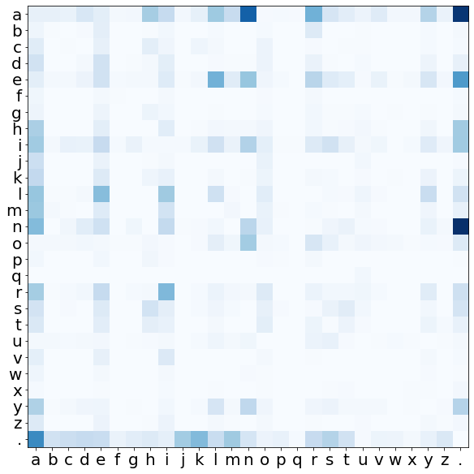
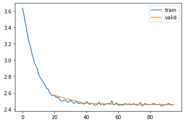
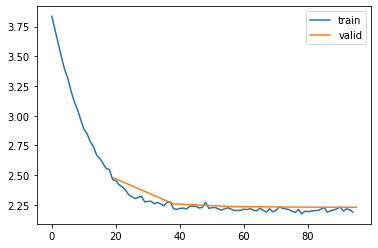
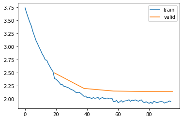
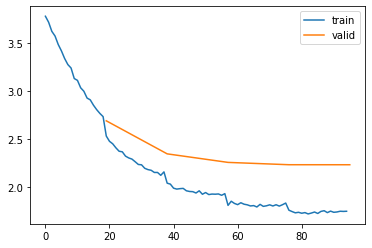
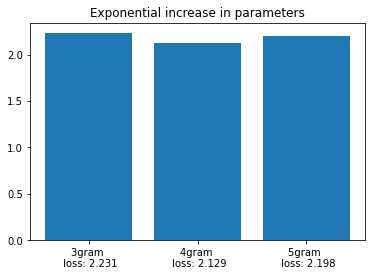
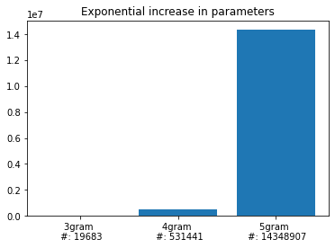

import random
from functools import reduce
from pathlib import Path
from urllib.request import urlretrieve
import torch
import torch.nn as nn
import torch.nn.functional as F
import matplotlib.pyplot as plt
import torcheval.metrics as tem
import fastcore.all as fc
from nntrain.dataloaders import DataLoaders
from nntrain.learner import *
from nntrain.activations import *N-gram language models
n-gram
nlp
embeddings
generative
In this post, I’ll discuss a very simple language model: n-grams! To keep things simple we will be concerned with single words, and not for example complete sentences. The goal will be to have a language model that learns from a corpus of (first-)names, and is able to create new name-sounding names. The idea as well as the dataset comes from Andrej Karpahy’s lecture series on Neural Networks.
Like most (any?) language model, n-gram models can be used to predict the next token in a sequence. The n in n-gram relates to the length of the used context. Bi-gram models only use the previous token as context, tri-gram models use the last two tokens to predict the following token.
Note
- token: When creating language models, we have to decide on the granularity of the data. We can for example build a model that deals with single characters (a-z), entire words or word-parts. This decision is formalized by the use of a dictionary, which is the list of unique elements occurring in the data. For the character level model we are building, the dictionary will consist of all letters (a-z). The elements of the dictionary are referred to as tokens. Besides the letters a-z, we will also add a token to the dictionary (a dot: “.”) reflecting the start and end of names.
- context: Related to the distinction between features (\(X\)) and labels (\(y\)). The context is the equivalent to the features: the data that is used as input to the model and from which a prediction is made (for the next character in a sequence).
Let’s clarify what we mean with prediction of the next token: an n-gram model learns a probability distribution over any of the tokens that can follow from any of the possible contexts. A bi-gram character-level model has thus a learned probability distribution over all the characters (a through z, and a token to denote the end of a word, so 26+1 tokens) that can follow from any character.
The simplest possible way to learn a probability distribution from training data, is by simply keeping track of the statistics in the training corpus:
- iterate through all the n-grams in the data
- count the occurrences of each n-gram.
If we then normalize these counts (by dividing through the sum) we have a probability distribution!
Data
Everything starts with training data:
path = Path('./data')
path.mkdir(parents=True, exist_ok=True)
path = path / 'names.txt'
url = 'https://raw.githubusercontent.com/karpathy/makemore/master/names.txt'
_ = urlretrieve(url, path)
with open(path, 'r') as f:
lines = f.read().splitlines()
random.seed(42)
random.shuffle(lines)
print('first 5 names in array: ', end=' ')
print(lines[0:5])
print(f'{len(lines)=}')first 5 names in array: ['yuheng', 'diondre', 'xavien', 'jori', 'juanluis']
len(lines)=32033Bi-gram count model
From the data, we first create the dictionary:
unique_chars = list(set("".join(lines)))
unique_chars.sort()
dictionary = unique_chars + ['.']
print(f'{dictionary=}')
print(f'{len(dictionary)=}')dictionary=['a', 'b', 'c', 'd', 'e', 'f', 'g', 'h', 'i', 'j', 'k', 'l', 'm', 'n', 'o', 'p', 'q', 'r', 's', 't', 'u', 'v', 'w', 'x', 'y', 'z', '.']
len(dictionary)=27From the dictionary we create a mapping from token to integer. We will use this mapping to encode our tokens (characters) into integers. This is called numericalisation:
c2i = {c:i for i, c in enumerate(dictionary)}
i2c = {i:c for i, c in enumerate(dictionary)}And just for clarity, let’s have a look at the bi-grams for the first name in the dataset:
Code
cutoff = round(len(lines) * 0.8)
train_lines = lines[:cutoff]
val_lines = lines[cutoff:]
name = "." + train_lines[0] + "."
print(f'name : "{train_lines[0]}"')
print(f'name with start and end token : {name}')
print('bigrams:')
bigrams = zip(name[:-1], name[1:])
for bigram in bigrams:
context = bigram[0]
next_char = bigram[1]
print(f'{context} --> {next_char} \t numericalized: {c2i[context]:>2} --> {c2i[next_char]:>2}')name : "yuheng"
name with start and end token : .yuheng.
bigrams:
. --> y numericalized: 26 --> 24
y --> u numericalized: 24 --> 20
u --> h numericalized: 20 --> 7
h --> e numericalized: 7 --> 4
e --> n numericalized: 4 --> 13
n --> g numericalized: 13 --> 6
g --> . numericalized: 6 --> 26To keep track of the occurrences we will use a matrix of size \([27, 27]\) (the size of the dictionary). The rows reflect the possible values of the context and the columns reflect any possible character following this context. We will initialize this matrix with zeros, and increase the value of the associated cell by one, every time we encounter an n-gram:
counts = torch.zeros([27,27], dtype=int) # initialize counts matrix
for name in train_lines: # iterate through all the names
name = "." + name + "." # add start and end token to the name
bigrams = zip(name[:-1], name[1:]) # create all bi-grams for the name (list of tuples)
for bigram in bigrams: # iterate through bi-grams
counts[c2i[bigram[0]], c2i[bigram[1]]] +=1 # increase the counts in the matrix for the encountered bi-gramThe count matrix is visualized below. On the vertical axis (the rows of the matrix) we have the context characters and on the horizontal axis (the columns of the matrix) the characters that follow from this context are shown. Bright (white) colors represent low counts, and dark blue colors represent high counts. The first observation is that the matrix is actually quite sparse. Many bi-grams appear very few times, and a couple of b-grams occur very frequently. We further observe:
- Looking at the first row: an “a” is followed very often either by an “n” or even more often by a “.”. Names often end with an “a”!
- Looking at the last row: names also start pretty often with an “a”
Code
fig, ax = plt.subplots(figsize=(10,10))
ax.imshow(counts, cmap='Blues');
ax.set_xticks(list(range(0,27)), list(c2i.keys()));
ax.set_yticks(list(range(0,27)), list(c2i.keys()));
ax.tick_params(axis='both', which='major', labelsize=20);
Let’s use this language model to generate some new names:
g = torch.Generator().manual_seed(42)
# Normalize over the rows
probs = counts / counts.sum(dim=1, keepdim=True)
names = []
for i in range(10): # generate 20 names
name = '.' # initialize each name with a starting token
while True: # loop until break
ctx = c2i[name[-1]] # index of last character
pdf = probs[ctx] # pdf over characters that follow from last character
s = torch.multinomial(pdf, 1, generator=g) # draw a sample given the pdf
c = i2c[s.item()] # transform to character
name += c # append new character to name
if c == '.': # stop sampling upon reaching an end of word token
names.append(name) # store away sampled name
break
names['.akyleloniatanacaro.',
'.eynn.',
'.con.',
'.thmarie.',
'.di.',
'.n.',
'.kahannoa.',
'.jadde.',
'.ethann.',
'.dalaydah.']Hmm, not super great names.. I guess it’s not surprising given the simplicity of this model.
How could we improve on this result? The most obvious way, would be to increase the context length (3-grams, 4-grams etc). This way, the model has more knowledge of what previously occurred, and can possibly create better predictions for the next character. This will probably work fine for n=3 and 4, but with even larger values of n, we will run into problems. The reason for this in short is that the counts matrix is going to be extremely sparse as the amount of rows (= the amount of possible contexts) increases exponentially: For a bi-gram, we have a context of just one token, so 27 possible values. For a tri-gram we have 2 tokens: that’s already \(27^2\) possible values.
We thus have to come up with another strategy to increase the performance of our model, for which we turn to neural networks😏
Neural network
It turns out that the count model described above, has an equivalence to a very simple neural network that’s composed of an embedding layer and uses cross-entropy loss.
Note
An embedding layer is a layer that is used to “encode” our data, which roughly translates to the way we input our data into a neural network. We already saw above that we numericalized our characters (a-z) as integers. We will have to do something similar for our neural network, since we can’t input characters into a neural network. However, instead of feeding integers into our network, we can also employ an embedding layer, which will basically create a vector out of our integers. Each integer value will be mapped to it’s own vector, and the values contained in this vector will be learned during training. The advantage of this, is that the model can easily learn different “attributes” that make up the individual tokens. For example, it could use the first dimension in the vector to denote whether the token is a vowel (a, e, i, o, u) and the second dimension to represent the likelihood of starting a sentence. The emphasis in the last sentence is on could, since these things have to be learned by the network itself during the training-process.
If we create an embedding layer with embedding dimensions equal to that of the dictionary, the outputs of this layer will also conform to the size of our dictionary, e.g. [batch_size * 26]. These raw outputs of our model are referred to as logits, and they can be anything: positive, negative, small or large. We can exponentiate these logits to get numbers that are always positive, and these values are equivalent to values in the “counts” matrix. We can then normalize these exponentiated logits row-wise, to get to probabilities. And finally adding a negative log-likelihood loss on these probabilities is guiding the network to establish an embedding matrix with weights that are practically identical to the (log transformed) counts matrix from above. The combined operation of exponentiating, normalizing and negative log-likelihood is what we call cross-entropy loss. See also an earlier blog post.
We are going to train this model using nntrain, the small neural network training library we have been created before. But before we do, we have to create the datasets and dataloaders. Let’s make the dataset generic so that it can create datasets for any n-gram model we wish. As a reminder, let’s have a quick look how 2-grams, 3-grams and 4-grams look for the first name in the data Emma:
Code
name = lines[0]
name = '.' + name + '.'
print('2-grams:')
for i in zip(name[:-1], name[1:]):
print(i[0], '--->', i[1])2-grams:
. ---> y
y ---> u
u ---> h
h ---> e
e ---> n
n ---> g
g ---> .Code
name = lines[0]
name = '..' + name + '.'
print('3-grams:')
for i in zip(name[:-2], name[1:-1], name[2:]):
print(i[0], i[1], '--->', i[2])3-grams:
. . ---> y
. y ---> u
y u ---> h
u h ---> e
h e ---> n
e n ---> g
n g ---> .Code
name = lines[0]
name = '...' + name + '.'
print('4-grams:')
for i in zip(name[:-3], name[1:-2], name[2:-1], name[3:]):
print(i[0], i[1], i[2], '--->', i[3])4-grams:
. . . ---> y
. . y ---> u
. y u ---> h
y u h ---> e
u h e ---> n
h e n ---> g
e n g ---> .We observe:
- irrespective of n, we always end up with the same amount of samples
- when we increase the context to n=3 and n=4, we need to add additional start-word tokens to make sure we don’t skip the first sample(s)
Let’s create a dataset in which we can set the value of n:
class NgramDataset():
def __init__(self, lines, n=2):
self.x = [] # store the xs, the context, the left hand side of the n-gram
self.y = [] # store the ys, the labels, the right hand side of the n-gram
for line in lines:
x = '.'*(n-1) # the first x is always full of "start word tokens"
for y in line + '.': # the first y is always the first letter of the name
self.x.append([c2i[xi] for xi in x]) # convert to int and store
self.y.append(c2i[y]) # convert to int and store
x = (x + y)[1:] # update x
self.x = torch.tensor(self.x) # from list to tensor
self.y = torch.tensor(self.y).squeeze() # from list to tensor
def __getitem__(self, i):
return self.x[i], self.y[i]
def __len__(self):
return len(self.x)Next, let’s create the model, which should also be able to deal with n-grams. Instead of using PyTorch’s nn.Embedding layer, we will use a custom weight tensor which will act as the weights of our embedding layer. The reason for this, is that nn.Embedding is only two dimensional. For an n-gram of n > 2, we would thus have to stack-up all the possible character combinations of the context in the row dimension. This is a bit tedious to implement, so instead we will use an explicit n-dimensional weight tensor. For the trigram this means: the first (second) dimension is for the first (second) character in the context, and the last dimension is for the label.
class NgramNet(nn.Module):
def __init__(self, n=2):
super().__init__()
self.n = n
self.embedding = nn.Parameter(torch.randn((27,)*n).requires_grad_())
def forward(self, x):
# logits are obtained by indexing into the embedding matrix
# for n=2 this is simply self.embedding[x], for n>2 it's a bit involved:
logits = self.embedding[[x[:,i] for i in range(0,self.n-1)]]
return logitstrain_ds = NgramDataset(train_lines)
val_ds = NgramDataset(val_lines)
bs = 10000
train_loader = torch.utils.data.DataLoader(train_ds, shuffle=True, batch_size=bs)
val_loader = torch.utils.data.DataLoader(val_ds, batch_size=bs*2)
dls = DataLoaders(train_loader, val_loader)m = NgramNet()
n_2gram = m.embedding.numel()
subs = [ProgressS(True),
MetricsS(),
DeviceS(device)]
l = Learner(m, dls, F.cross_entropy, torch.optim.Adam, None, subs=subs)
l.fit(5, lr=1e-1)| epoch | mode | loss |
|---|---|---|
| 0 | train | 2.991 |
| 0 | eval | 2.575 |
| 1 | train | 2.510 |
| 1 | eval | 2.477 |
| 2 | train | 2.468 |
| 2 | eval | 2.463 |
| 3 | train | 2.462 |
| 3 | eval | 2.460 |
| 4 | train | 2.460 |
| 4 | eval | 2.459 |

Now, let’s patch our model with a generate() method, returning names sampled from the learned representation. We can pass in a generator to make sure we get the same random behavior as we have seen above when generating names with the counts model:
@fc.patch
def generate(self:NgramNet, n=10, generator=None):
names = []
for i in range(n):
name = '.' * (self.n-1)
while True:
# the following 2 lines are a involved, but I couldn't find a cleaner way
# to make this work for both n=2 and n>2,
# since indexing works differently for both cases
idx = [c2i[i] for i in name[-(self.n-1):]]
logits = reduce(lambda emb, i: emb[i], idx, self.embedding).detach().cpu()
s = torch.multinomial(F.softmax(logits, dim=0), 1, generator=generator)
c = i2c[s.item()]
name += c
if c == '.':
names.append(name)
break
return namesm.generate(generator=torch.Generator().manual_seed(42))['.akyleloniatanacaro.',
'.eynn.',
'.con.',
'.thmarie.',
'.di.',
'.n.',
'.kahannoa.',
'.jadde.',
'.ethann.',
'.dalaydah.']As you can see, these names are extremely similar to the ones we created above with the counts based model, and this is actually pretty surprising. One model was based on common sense, logic and simple counting. The other model on neural networks, embedding layers, loss functions, training loops, backward passes etc etc. Nonetheless, the results are the same!
The reason for this, is that the network architecture (and the loss) implies mathematical equivalence between both approaches. This can probably be shown explicitly with lots of complicated math, which I am not even going to try (I guess the answer will involve the principle of “maximum likelihood”..)
We can also have a look at both the weight matrices to see that the embedding matrix is extremely similar to the counts matrix. The way this network is set-up, is thus resulting in a weight matrix which is practically identical to the counts matrix!
fig, axs = plt.subplots(1,2, figsize=(10,5))
axs[0].imshow(F.softmax(m.embedding.detach().cpu(), dim=1).numpy());
axs[0].set_title('"softmaxed" embedding matrix: \n turning logits into probabilities');
axs[1].imshow(probs);
axs[1].set_title('Probs matrix from the count model');
Next steps
This extremely cool equivalence means we can switch to a neural network paradigm and tweak the network to improve performance. In other words, we can use any trick in the book for training neural networks! This is neat, because with the explicit counting based approach we were stuck with the “curse of dimensionality” for growing values of n.
In the next post, I’ll discuss a first improvement: a simple but interesting model from Y. Bengio et al described in the paper A Neural Probabilistic Language Model. But let’s quickly train a couple of networks with higher n-grams to see how that goes.
def fit_ngram(n):
train_ds = NgramDataset(train_lines, n=ngram)
val_ds = NgramDataset(val_lines, n=ngram)
train_loader = torch.utils.data.DataLoader(train_ds, shuffle=True, batch_size=bs)
val_loader = torch.utils.data.DataLoader(val_ds, batch_size=bs*2)
dls = DataLoaders(train_loader, val_loader)
m = NgramNet(n=ngram)
n_elem = m.embedding.numel()
l = Learner(m, dls, F.cross_entropy, torch.optim.Adam, None, subs=subs)
l.fit(5, lr=1e-1)
return n_elem, l.loss.detach().cpu()num_elems, eval_losses = [], []ngram = 3
num_elem, eval_loss = fit_ngram(ngram)
num_elems.append(num_elem)
eval_losses.append(eval_loss)| epoch | mode | loss |
|---|---|---|
| 0 | train | 3.072 |
| 0 | eval | 2.480 |
| 1 | train | 2.323 |
| 1 | eval | 2.257 |
| 2 | train | 2.224 |
| 2 | eval | 2.234 |
| 3 | train | 2.208 |
| 3 | eval | 2.230 |
| 4 | train | 2.203 |
| 4 | eval | 2.228 |

The evaluation loss went down from 2.595 for the bi-gram model to 2.437 for the tri-gram model, an improvement! Let’s try a 4-gram model as well:
ngram = 4
num_elem, eval_loss = fit_ngram(ngram)
num_elems.append(num_elem)
eval_losses.append(eval_loss)| epoch | mode | loss |
|---|---|---|
| 0 | train | 3.067 |
| 0 | eval | 2.492 |
| 1 | train | 2.217 |
| 1 | eval | 2.195 |
| 2 | train | 2.014 |
| 2 | eval | 2.145 |
| 3 | train | 1.956 |
| 3 | eval | 2.138 |
| 4 | train | 1.932 |
| 4 | eval | 2.139 |

ngram = 5
num_elem, eval_loss = fit_ngram(ngram)
num_elems.append(num_elem)
eval_losses.append(eval_loss)| epoch | mode | loss |
|---|---|---|
| 0 | train | 3.216 |
| 0 | eval | 2.690 |
| 1 | train | 2.287 |
| 1 | eval | 2.344 |
| 2 | train | 1.955 |
| 2 | eval | 2.255 |
| 3 | train | 1.810 |
| 3 | eval | 2.230 |
| 4 | train | 1.735 |
| 4 | eval | 2.230 |

And here, we start to see problems. The train loss is still getting better (1.735 for 5-gram vs 1.932 for 4-gram) but the evaluation loss is worse (2.198 for 5-gram vs 2.129 for 4-gram).
fig, ax = plt.subplots(1)
ax.bar(range(0,3), eval_losses)
ax.set_xticks(range(0,3), [f'3gram \n loss: {eval_losses[0]:.3f}', f'4gram \n loss: {eval_losses[1]:.3f}', f'5gram \n loss: {eval_losses[2]:.3f}']);
ax.set_title('Exponential increase in parameters');
Let’s also quickly compare the number of elements in the embedding layer for the 2, 3 and 4-gram models:
fig, ax = plt.subplots(1)
ax.bar(range(0,3), num_elems)
ax.set_xticks(range(0,3), [f'3gram \n #: {num_elems[0]}', f'4gram \n #: {num_elems[1]}', f'5gram \n #: {num_elems[2]}']);
ax.set_title('Exponential increase in parameters');
Final remarks on language models
After reading this blog post, I was thinking about what exactly makes this neural network a language model? The neural network obviously doesn’t know it’s a language model. It doesn’t know that the inputs are letters and that it’s predicting the next token in the sequence. Here are some closing thoughts:
Many samples in the training data have the same context (features), but a different next character (label). Consider a bi-gram model and two names: “Emma”, “Esmeralda”. The first bi-gram for each of these names (skipping the start name token) are (e, m) for Emma and (e, s) for Esmeralda. They have the same context (e) but a different label (m and s respectively). This happens of course quite often in the data, and shows there is not a 1:1 relation from inputs to outputs. The model thus needs to learn a probability distribution over the possible labels. This learned probability distribution is what makes the model generative, since we can sample iteratively from it to create new names.
The point above is formalized in the models we created, by setting up a loss function that is used for multi-class classification (cross entropy loss). In non-generative models, this loss is used to predict the correct (single!) class for any input. During inference, the class that has the largest logit will be our prediction for the input. However, for generative models we don’t look at the class with the largest logit, instead we look at all the logits and turn it into a probability distribution (by taking the softmax) to sample over it. In this regard, there is no difference in network architecture between generative and non-generative models per se, but a difference in the way we use the network.
Language models have a finite set of values the inputs and outputs can take on. Since we are working with a dictionary, any input or output token is necessarily an element in this set. This is different for example from a regression problem in which we try to estimate the housing price from the square footage. In that case both the feature (square footage) and the label (price) can take on any value. The fact that the output has a finite set of outcomes is formalized by the loss function described above. The fact that the input is finite, is formalized by making use of an embedding matrix to encode our inputs.
In the past I have worked a couple of times on time series forecasting. And one simple way to create a probabilistic forecast, would be to employ the n-gram models defined above. The only requirement would be that the values are discretized.